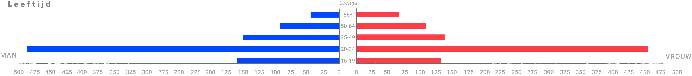

ONDERZOEK
In een onafhankelijk onderzoek van Controle Alt Delete zijn 2000 mensen in de omgeving Amsterdam gevraagd hun ervaringen te delen door middel van een vragenlijst. Met dit onderzoek is geprobeerd te achterhalen hoe groot het probleem van Etnisch profileren is.
Voor dit onderzoek zijn door Controle Alt Delete een aantal indicatoren opgesteld, de bijbehorende indicatoren kun je bij de grafieken lezen.

VAN WIE IS DE DATA?
Welke mensen hebben de enquete ingevuld en representeren de data uit de grafieken?


